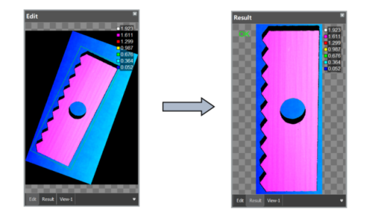
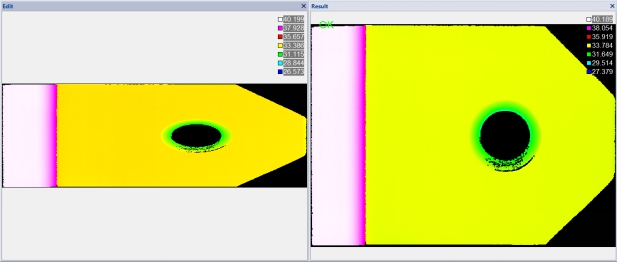

Công cụ lấy mẫu affine chủ yếu lấy mẫu ảnh trong vùng hình chữ nhật affine của ảnh độ sâu đầu vào, xuất ra ảnh hình chữ nhật để thuận tiện cho xử lý tiếp theo.

Tình huống sử dụng “Tự động xác định - độ phân giải nhất quán”:
Trong ứng dụng dự án 3D, đối với cảm biến 3D dạng quét dòng, do cần đáp ứng yêu cầu về tốc độ thu thập hoặc độ chính xác, có thể xảy ra tình trạng độ phân giải theo hướng X và Y của ảnh quét không bằng nhau. Lúc này, ảnh độ sâu thu được sẽ biểu hiện hiện tượng kéo giãn hoặc nén theo một hướng nào đó, khiến ảnh bị biến dạng. Sử dụng công cụ lấy mẫu affine đám mây điểm có thể hiệu chỉnh biến dạng này, giúp ảnh trở lại bình thường. Như hình 2.

| Phân loại | Tên tham số | Mô tả tham số |
|---|---|---|
| Cửa sổ thuộc tính | Loại ROI | Có thể chọn “toàn bộ ảnh”, “ROI hình chữ nhật”, “ROI hình chữ nhật affine” |
| Chế độ lấy mẫu | Chọn “lấy mẫu thủ công”, thì người dùng cần nhập chiều rộng và chiều cao của ảnh độ sâu sau lấy mẫu, và dựa vào đó tính lại độ phân giải X, Y của ảnh độ sâu. Chọn “tự động xác định - độ phân giải nhất quán”, thì lấy mẫu theo giá trị nhỏ hơn trong độ phân giải X, Y của ảnh gốc, đồng thời tính lại chiều rộng và chiều cao của ảnh độ sâu. Chọn “tự động xác định - giữ tỷ lệ co giãn”, thì lấy mẫu theo kích thước ROI, kích thước ảnh kết quả giống với kích thước ROI. | |
| Chiều rộng ảnh sau lấy mẫu | Chiều rộng của ảnh độ sâu sau lấy mẫu. | |
| Chiều cao ảnh sau lấy mẫu | Chiều cao của ảnh độ sâu sau lấy mẫu. | |
| Bật tính toán song song | Có bật tính toán song song hay không. Khi chọn Có, thuật toán sẽ bật phương thức tính toán song song OpenMp, có thể tăng tốc độ tính toán, nhưng có thể xuất hiện tình trạng thời gian xử lý không ổn định. Khi chọn Không, thuật toán sẽ tắt tính toán song song OpenMp. | |
| Phần trăm số luồng | Thiết lập phần trăm số luồng của tính toán song song, phạm vi hợp lệ là (0, 0.75], tương ứng biểu thị phạm vi phần trăm (0%, 75%]. | |
| Cửa sổ ảnh | Ảnh độ sâu đầu vào | Hiển thị ảnh độ sâu cần biến đổi. |
| Liên kết dữ liệu | Ảnh độ sâu đầu vào | Nhập ảnh độ sâu cần biến đổi. |
| Biến đổi tuyến tính 2D | Phép biến đổi tịnh tiến, xoay, co giãn của mục tiêu so với mẫu. | |
| Giao diện nâng cao | Không | Không |
| Phân loại | Tên tham số | Mô tả tham số |
|---|---|---|
| Cửa sổ giám sát | Ảnh độ sâu đầu ra | Chiều dài, chiều rộng và kích thước pixel của ảnh độ sâu đầu ra, cũng như tham số dữ liệu độ sâu. |
| Kết quả thực thi | Kết quả thực thi công cụ. | |
| Thời gian thực thi | Thời gian thực thi công cụ. | |
| Cửa sổ ảnh | Ảnh độ sâu đầu ra | Hiển thị ảnh kết quả thực thi công cụ, giống với tham số ảnh độ sâu đầu ra trong cửa sổ giám sát. |
| Kết quả thực thi | Hiển thị kết quả thực thi công cụ, thực thi thành công hiển thị “OK”, thực thi thất bại hiển thị “NG”, giống với tham số kết quả thực thi trong cửa sổ giám sát. | |
| Liên kết dữ liệu | Ảnh độ sâu đầu ra | Ảnh độ sâu sau khi lấy mẫu được xuất ra, dùng cho các công cụ khác. |
Không
Không
Tham khảo “\Samples\3D\深度图\点云仿射采样工具.gvp”.